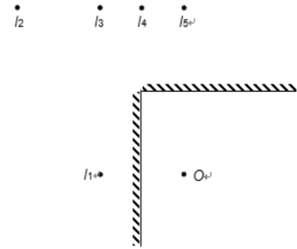
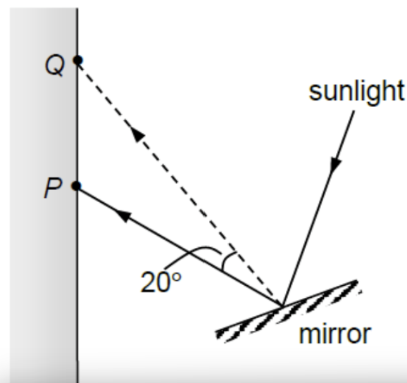
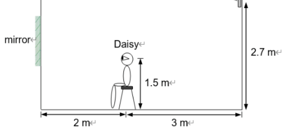

S3 Physics · 3 multiple-choice items
In the following figure, two plane mirrors at right angles face each other. An object is placed at O. Multiple images are thus formed by the mirrors. Which of the following is/are NOT the image(s) formed by the mirrors?

A beam of sunlight is incident on a plane mirror as shown in the figure. The light beam is reflected and hits point P on a wall. How should the mirror be rotated so that the reflected beam hits point Q?


Daisy is sitting on a chair and a clock is installed on the wall at 3 m behind her. She wants to install a plane mirror on the wall at 2 m in front of her so that she can see the image of the clock in the mirror. Daisy’s eyes and the clock are at 1.5 m and 2.7 m above the ground respectively. Find the minimum height of the upper edge of the mirror.
Teacher page · 3 items
Answer: C. I₂ and I₄ only
Guide: Two plane mirrors at 90° form three images. I₁ is the image in the vertical mirror, the same distance behind that mirror as O is in front. I₅ is the image in the horizontal mirror, directly opposite O. I₃ is the image formed by reflection in both mirrors, found by reflecting O through the corner. I₂ and I₄ are not at any of these positions, so they are not images.
Answer: A. Clockwise, 10°.
Guide: The reflected rays to P and to Q differ by 20°, and the ray must turn clockwise to move from P up to Q. Turning a plane mirror through an angle θ turns the reflected ray through 2θ in the same direction. The mirror is therefore rotated clockwise through 10°.
Answer: C. 1.84 m
Guide: The clock is 2 m + 3 m = 5 m in front of the mirror, so its image is 5 m behind the mirror and still 2.7 m above the ground. Daisy’s eyes are 2 m in front of the mirror and 1.5 m above the ground. The top edge of the mirror lies on the straight line from her eyes to that image. The height is 1.5 + (2/7)×(2.7 − 1.5) = 1.84 m.